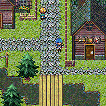
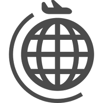

Works
実務経験
Webサービス群死活監視ダッシュボード
契約各社に提供しているASPサービスの死活監視を行い、障害発生時のワークフローを一元管理する運用向けWebサービスです。Wi-Fi Direct を用いたP2P通信の実証実験アプリ
インターネット回線が使用できない環境下でも複数の端末がバケツリレー型のデータ転送を行えるようにするべく、某大学の研究に使用されたAndorid用アプリです。Google Cloud Vision を用いた名刺の読取～発注サービス
スマートフォン等で撮影した名刺画像をアップロードするだけで名刺の輪郭検出、文字内容の読み取りまでを自動で行い、実際の発注までをワンストップで行えるようにした某オフィス通販サイトのサービスです。店舗型会員制サービスの退会予測AIモデル
店舗型会員制サービスにおける個々の会員の退会確率を予測するAIです。退会可能性がより高い顧客に早めの施策を打ち出すことにより、退会を防ぐためのソリューションの一部として開発いたしました。


About
Career
- 
2007-2012年 (中学-高校)
自作のゲーム製作に励む
RPGツクールに没頭したのち、それでは飽き足らずプログラミングに手を出し始める。
いきなりRPGという高いハードルに何度も挫折を繰り返し、独学ながらも自分で思い描いたロジックを何とか形にできるまでに到達。 -

2013-2016年 (大学)
自作エディターでチーム開発
大学入学後、早々に創作活動サークルを立ち上げる。
初心者でも簡単に作れるように専用エディターとゲームエンジンを自作し、部員からの要望を聞きながら改良を繰り返す日々を送る。
チームワークの極意やアプリ開発に関わるノウハウを徐々に身に付け始める。 -
2017年
新卒で道内の開発会社に入社
サークル活動を通じてIT業界を志すようになる。
お客様の声を直接聞きながら提案から設計、開発、保守までをワンストップで請け負う道内の会社に入社。
受託開発や既存サービスの機能追加を中心に比較的小規模なプロジェクトを一通りこなしながら幅広く経験を積んでいく。 - 
2020年
同社、部署異動となる
旅行業システムの開発を手掛ける専門部署へ異動となる。
-

そして、現在に至る
さらなる高みを目指して奮闘中。
Beliefs
“スペシャリスト„ より “ゼネラリスト„ がいい。
受け皿は広く持ち、その時々に応じて必要な事柄を深堀りしていきます。
ここまで “ゼネラリスト„ にこだわる理由は、あらゆる領域を密接に関連付けることによって、アウトプットの価値を最大化するための「引き出し」となると考えているからです。
「木を見て森を見ず」といった状況に陥らぬよう、常日頃から全体像を捉えることを重視しています。
価値を生み出すエンジニアでありたい。
単なる歯車としての技術者ではなく、自ら考え、アウトプットの価値を最大化するための努力を惜しみません。
これは「お客様の課題が解決する」ことに留まるわけではありません。
たとえば、コードを綺麗に保つこと、開発体制の改善、レガシーからの脱却などといった内側からの取り組みも、エンジニアとして成しうる「価値生産」の一つであると考えています。
お客様も自分たちも双方が幸せになれるプロダクト作りを目指す。
お客様だけを主眼に置いたプロダクト作りは、無理なコスト、無理なスケジュールを引き起こし、開発チーム全体を崩壊させるリスクがあります。
逆に、エンジニアたちを中心としたプロダクト作りは、自分たちの価値にはなれど、お客様への価値提供には繋がらないことがあります。
こういったことから、双方が win-win となる選択肢を常に模索したプロダクト作りを重視しています。
「どうやるか？」ではなく「なぜやるか？」をとことん考え抜く。
技術とはあくまで手段であって、その手段を導くための大元となる目的が必要不可欠です。
特定の技術を使うことを目的にしてしまうと、あるべき姿を見失います。
「なぜ？」をとことん考え抜くことによって、カタチや実現方法を変えてもブレずに成り立つサービスを生み出すことができると考えています。
Strength
- What から How を導くこと
- 開発全般、特に複数言語を並行して操ること
- 振り返ること、経験を抽象化すること
- 議論を構造化すること
- アーキテクチャーの設計
- 1 あるものを 10 や 100 まで広げること
- メンタリング
- 全般的な AI に関する知識
- レガシーからの脱却
- 組織改善の提案
Weakness
- 同時並行かつ高速に進めなければならない作業
- 慢性的な長時間労働
- 単純労働、同じことを繰り返す作業
- 英語 (読むこと以外すべて)
- ゼロベースからのデザイン
- 高度な数学
- 0 から 1 を生み出すこと
- 厳格な上下関係
Wanna Try
- イベント登壇、エバンジェリスト活動
- スタートアップ等の新規事業立ち上げ
- エンジニア育成活動
- ハードウェア製作
- セキュリティ診断
Skills
| 保有資格 | ITパスポート |
|---|---|
| 習得言語 | C# Visual Basic .NET Java Python Node.js HTML5 CSS3 C++ R |
| フレームワーク・ライブラリ | C++ | Win32 C# | WinForms Java | Spring Boot Thymeleaf Struts2 FreeMarker Python | Flask Django Jinja2 TensorFlow Keras NumPy Pandas Node.js | Webpack Gulp Babel Scss Bootstrap |
| 開発環境 | C++ | Visual Studio C# | Visual Studio Unity Java | Eclipse Python | VSCode Node.js | VSCode R | RStudio |
| DBMS | SQLite MySQL Oracle Database |
| パブリッククラウド | GCP | Compute Engine App Engine Functions Run Stackdriver Vision Storage Container Registry AWS | EC2 S3 RDS Lightsail ECR ECS SageMaker |
| プラットフォーム | Linux | CentOS Ubuntu Windows 10 Android |
| 周辺ツール | Git Subversion Docker VMware ESXi |